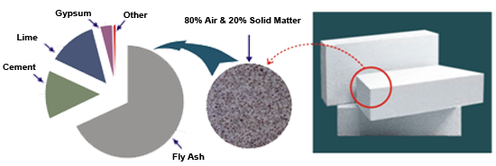

What is AAC
History of AAC
Autoclave Aerated Concrete Masonry Units (AAC), are ultra lightweight concrete blocks with a unique cellular structure that provides superior energy efficiency, fire resistance and acoustical properties. Though AAC is largely new to India, AAC is not a new building material; it was developed in Sweden in the late 1920s by Architect Dr. Johan Axel Eriksson. Today there are manufacturing facilities spread across all over the world and in all climatic conditions.
Manufacturing
The basic raw materials used in the manufacturing of AAC are Pulverized Fly Ash (PFA), Portland Cement (PPC), Lime, Water and Aluminum powder. All the materials are mixed to form slurry. The slurry is then poured into molds. Entrained air bubbles are created by a chemical reaction between the hydration products and aluminum powder, which causes the material to rise in the mold. After curing for 45 minutes, the product is cut into the unit sizes by piano wires. The units are then cured under pressure in autoclaves for 8 to 12 hours, which transforms the material into hard calcium silicate.

Technical Aspects & Benefits
Sr. No.
1
2
3
4
5
6
7
8
9
10
Parameter
Size (L x H x B)
Precision in Size
Compressive Strength
Dry Density
Fire Resistance
Sound Reduction Index
Thermal Conductivity
Mortar Consumption
Plaster Thickness
Energy Saving
AAC Blocks
600mm x 200mm x 100 to 300 mm
Variation 2 mm (+/-)
Above 4-5 N/mm2 (As per IS 2185 Part - III)
550-650 Kg/m3 (Oven dry)
2 – 6 hours depending on thickness of wall
45 dB for 200 mm thick wall
0.16 (k) w/m deg. C
Thin bed jointing mortar required
8 mm to 12 mm max for interior and 12 mm to 16 mm max for exterior
Upto 15% of Air conditioning cost, Both heating and cooling cost will come down considerably
Clay Brick
230mm x 75mm x 100mm
Variation 5mm (+/-)
1.5-2.5 N/mm2
1950 Kg/m3
2 Hours
50dB for 220 mm thick wall
0.81 w/mk
Cement required
15 mm to 20 mm
No saving
Benefits of AAC Blocks
Faster construction and easy workability
Presicion and undulation free partitions
Better strength at 1/3rd density
Lower structural and handling cost
Fire resistant structure
Better accoustics
Energy saving and better temperature maintenance
No curing required, neat & clean site
Cost saving
Cost saving throughout the life